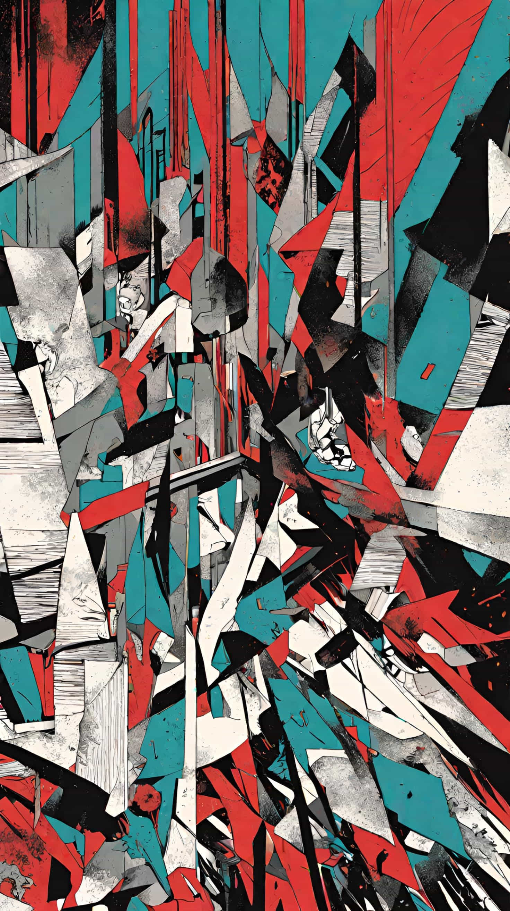

The Creative Drive Hypothesis: Exploring the Fundamental Creative Impulse of the Cosmos
The Creative Drive Hypothesis explores whether the emergence of complex structures and systems can be understood through a recurring creative tendency in nature. The idea treats human creativity as one expression of a wider capacity for generating novelty and organized complexity.
The Idea in Plain Terms
Pour cold cream into hot coffee and watch the surface. For a few seconds there are scrolls and spirals, structure appearing from a stirred cup that nobody arranged. Then it flattens out and the pattern is gone. The structure was not a violation of thermodynamics. It was produced by the flow of heat through the liquid, and it lasted exactly as long as the temperature difference driving it.
That is the whole hypothesis in small. Order appears wherever energy passes through matter that can hold a shape, and it lasts while the flow lasts. Prigogine and Stengers (1984) gave the general account: systems far from equilibrium organise themselves, and the organisation is paid for by the energy running through them. England (2013) tightened it to a bound, showing that a self-replicating structure must produce at least a calculable amount of heat, fixed by its growth rate, its internal entropy, and how easily it falls apart.
The hypothesis then asks whether human invention is the same process running in a different medium. Campbell (1960) argued that it is, and specified the mechanism: generate variations with no foresight about which will work, keep the ones that survive a test, and repeat. On that account a painter and a genome are doing the same thing at different speeds. The hypothesis takes the second reading: the drive is the shape any process takes when it generates novelty under selection, which is why it appears wherever energy flows through matter that can hold a form.
The Emergence of Complexity
Throughout the history of the universe, increasingly complex structures and systems have emerged, from stars and galaxies to life on Earth. The Creative Drive Hypothesis frames this progression as more than random accumulation: it asks whether complexity formation reflects stable generative principles in physical, biological, and cultural systems.
The progression can be measured rather than asserted. Chaisson (2001) proposed energy rate density, the power flowing through a gram of a system each second, and found it rising by orders of magnitude along the sequence from stars to planets to plants to brains to machines. It is the most concrete quantity anyone has attached to the claim that complexity has a direction, and it is measurable once the boundary of the system is declared, which is the same requirement any thermodynamic accounting carries.
The mechanism has candidates too. Prigogine and Stengers (1984) showed that structure forms spontaneously in systems held far from equilibrium, sustained by dissipation rather than in spite of it. Kauffman (1993) argued that networks of interacting components fall into ordered regimes for combinatorial reasons that owe nothing to selection. England (2013) derived a lower bound on the heat a self-replicator must produce. None of these requires a purpose behind the process. Each supplies a physical reason why complexity should be common, which is what the hypothesis means by a drive: a tendency with a mechanism, not an intention.

Universe 00110000
Human Creativity: A Mirror of the Cosmos
The Creative Drive Hypothesis suggests that human creativity can be read as a local expression of broader complexity-generating processes. Human beings create, innovate, and transform their surroundings through the same general pattern: variation, selection, recombination, and stabilization.
Campbell (1960) made this an explicit theory rather than an analogy. Creative thought, on his account, requires variation that is blind in a precise sense, meaning the variations are not pre-sorted by any process that already knows which will succeed, followed by selective retention of whatever passes a test. Simonton (1999) developed the model and pointed at the evidence that supports it: a creator's hit rate stays roughly constant across a career, so the people with the most successes are the ones with the most attempts, which is what a variation-and-selection process predicts and a directed-insight account does not.
Blind here does not mean random. Variation is constrained by everything the person already knows. The claim is narrower: at the moment a variation is generated, its value is not yet known, and finding out costs a test.
Integrating the Simulation Hypothesis
The Creative Drive Hypothesis takes on a further reading when combined with the Simulation Hypothesis, which proposes that our reality may be a simulated construct created by a higher intelligence. If our universe is a simulation, the creative impulse encoded within it may reflect the intentions of the simulators.
Bostrom (2003) establishes the possibility on ordinary assumptions about computation. The Creative Drive Hypothesis supplies what the simulation is for: a system built to generate novelty and organised complexity, with the creative impulse encoded in it as the intention of whoever set it running.
Universe 00110000
Implications and Future Directions
The Creative Drive Hypothesis has implications for how we understand creativity and complexity. It invites us to examine creativity as a process that appears across domains, from physical self-organization to biological evolution and human culture.
What turns the framing into a result is comparative and quantitative. If cosmic, biological, and human creativity are one process, they share measurable signatures: the same statistics of novelty over time, the same relation between attempt rate and success rate that Simonton (1999) found in creative careers, the same dependence on throughput that Chaisson (2001) tracks across scales. Each is measurable in its own domain, and the hypothesis stands on whether they agree.
Conclusion
The Creative Drive Hypothesis treats novelty generation and structure formation as one process appearing at every scale. The physics carries the premise. Structure forms wherever energy flows through matter that can hold a shape (Prigogine and Stengers 1984), networks fall into ordered regimes for combinatorial reasons that precede selection (Kauffman 1993), and a self-replicator has a calculable minimum heat cost set by its growth rate and durability (England 2013). Chaisson (2001) put a number on the progression with energy rate density, which climbs by orders of magnitude from stars to planets to brains.
Human creativity runs the same cycle in a faster medium. Campbell (1960) specified it as variation generated without foresight followed by selective retention, and Simonton (1999) found the signature that model predicts: a creator's hit rate stays roughly constant across a career, so the people with the most successes are the ones who made the most attempts.
Read practically, creativity is a throughput problem. Generate more, test faster, keep what survives.
References
- Bostrom, Nick. "Are We Living in a Computer Simulation?" The Philosophical Quarterly 53, no. 211, 2003, 243–255.
- Campbell, Donald T. "Blind Variation and Selective Retention in Creative Thought as in Other Knowledge Processes." Psychological Review 67, no. 6, 1960, 380–400.
- Chaisson, Eric J. Cosmic Evolution: The Rise of Complexity in Nature. Harvard University Press, 2001.
- England, Jeremy L. "Statistical Physics of Self-Replication." The Journal of Chemical Physics 139, no. 12, 2013, 121923.
- Kauffman, Stuart A. The Origins of Order: Self-Organization and Selection in Evolution. Oxford University Press, 1993.
- Prigogine, Ilya, and Isabelle Stengers. Order Out of Chaos: Man's New Dialogue with Nature. Bantam Books, 1984.
- Simonton, Dean Keith. "Creativity as Blind Variation and Selective Retention: Is the Creative Process Darwinian?" Psychological Inquiry 10, no. 4, 1999, 309–328.